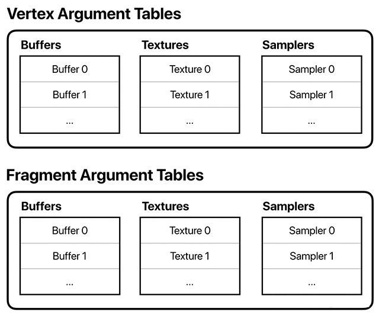

网格数据
1、3D 模型
要渲染三维物体，需要一个由网格、相机、光线、纹理等数据组成的场景：
- 前面案例的 3D 立方体或者球体采用 直接给出顶点坐标值或者基于数学公式用程序生成坐标值 的方法，这在一些简单的场景中肯能够使用了；
- 但如果构建更加复杂、更加逼真的场景，需要采用的物体及其几何形状可能会很复杂而且不能直接用数学公式描述，如城市模型、汽车模型等！
这种复杂的三维场景，一般使用 3D 建模工具（如 3ds Max、Maya 等）建立物体模型，然后导出成特定格式的模型文件在程序中加载渲染！常见的 3D 模型文件有 obj、 3ds、 fbx 等！
1.1、Obj 模型文件
Obj 文件是最简单的一种 3D 模型文件，其本质就是具有固定格式的文本文件！Obj 文件中将顶点坐标、三角形坐标、纹理坐标等信息已固定格式的文本字符串表示：
v 649.6328 -5.4034 791.5802
v 568.9182 -5.4034 851.4427
# 14291 vertices
vn -0.0000 1.0000 -0.0000
vn -0.0000 1.0000 0.0000
# 12848 vertex normals
vt 0.5884 0.3337 0.0000
vt 0.4619 0.4226 0.0000
# 2798 texture coords
g cage_stairs_01
usemtl structure
s 1
f 1/1/1 2/2/2 3/3/3
f 3/3/3 4/4/4 1/1/1
# 27664 faces
从上述 Obj 文件片段可以看出，其内容是以行为为基本单位进行组织的，每种不同前缀开头的有不同的含义：
#号开头用于注释，在程序加载过程中略过；v开头用于存放顶点坐标，其后面的 3 个数值分别表示一个顶点的x, y, z坐标；vt开头用于存放顶点纹理坐标，其后面的 3 个数值分别表示纹理坐标的S, T, P分量；S, T分量就是纹理二维坐标；P分量指的是深度纹理坐标，主要用于 3D 纹理的采样！
vn开头用于存放顶点法向量，其后面的 3 个数值分别表示一个顶点的法向量在X, Y, Z轴的分量；g开头的一行表示一组的开始，后面的字符串为此组的名称；- 所谓组是由顶点组成的一些面的集合；
- 只包含
g的行表示一组的结束，与g开头的行成对应关系；
f开头的行表示组中的一个面；- 如果是三角形，则后面有 3 组用空格分割的数据，代表三角形的三个顶点；
- 每组数据包含 3 个数值，用
/分割，依次表示顶点坐标索引、顶点纹理索引、顶点法向量索引；
计算行号时，各种不同的前缀是独立计算的：如文本中的第 5 行为 v 开头的第 2 行!
f 200/285/300 196/280/399 195/260/350
/// 三角形的三个顶点坐标分别来自 v 开头的第 200、196、195 行
/// 三个顶点的纹理坐标分别来自 vt 开头的第 285、280、260 行
/// 三个顶点的法向量分别来自 vn 开头的第 300、399、350 行
注意：Obj 文件中一般顶点坐标与面坐标（索引）的数据是必须提供的，而法向量与纹理数据是可选的！
1.2、Obj 模型文件的加载
Metal 使用框架 ModelIO 加载 Obj 模型文件！此时加载的资源不能直接在 Metal 中使用，还需要一步步转为 Metal 所能理解和使用的资源！
- 使用顶点描述符
MTLVertexDescriptor来定义顶点的读取方式及其属性：如位置，纹理坐标，法线和颜色； - 当 GPU 获取顶点缓冲区时，
MTLRenderCommandEncoder会告知 GPU 是否对缓冲区建立索引； - 如果缓冲区未编入索引，则GPU假定缓冲区是一个数组，并按顺序一次读入一个元素。
- 此索引很重要，因为顶点被缓存以供重用：例如，立方体有十二个三角形和八个顶点，如果不进行索引，则必须为每个三角形指定顶点并向GPU发送三十六个顶点。 这可能听起来不是很多，但在具有几千个顶点的模型中，顶点缓存很重要！
- 还有用于顶点着色器的缓存，以便多次访问的顶点仅被着色一次。着色顶点是已应用颜色的顶点。但这种情况发生在下一阶段。
- 一个名为Scheduler的特殊硬件单元将顶点及其属性发送到顶点着色器；
2、API
2.1、缓冲区分配器 MTKMeshBufferAllocator
分配器 MTKMeshBufferAllocator 用于缓冲区的创建：分配一块内存传递给 MDLAsset，将顶点数据和索引数据加载到 Metal 缓冲区。
@interface MTKMeshBufferAllocator : NSObject
<MDLMeshBufferAllocator>
- (nonnull instancetype)init NS_UNAVAILABLE;
/// 初始化分配器：用于缓冲区的创建
- (nonnull instancetype)initWithDevice:(nonnull id<MTLDevice>) device;
@property (nonatomic, readonly, nonnull) id<MTLDevice> device;
@end
代码示例
{
/// 创建一个分配器
MTKMeshBufferAllocator *bufferAllocator = [[MTKMeshBufferAllocator alloc] initWithDevice:device];
/// 使用分配器将指定路径的文件加载到一块内存中
MDLAsset *asset = [[MDLAsset alloc] initWithURL:url
vertexDescriptor:nil
bufferAllocator:bufferAllocator];
NSAssert(asset, @"无法打开指定路径的模型文件: %@", url.absoluteString);
}
2.2、网格缓冲区 MTKMeshBuffer
当 Model I/O 需要存储顶点数据或索引数据时，使用分配器 MTKMeshBufferAllocator 分配的网格缓冲区 MTKMeshBuffer。
这些缓冲区的内存支持 Metal 缓冲区；Model I/O 将从模型资源中直接加载索引数据和顶点数据到 Metal 缓冲区。
@interface MTKMeshBuffer : NSObject
<MDLMeshBuffer, MDLNamed>
- (nonnull instancetype)init NS_UNAVAILABLE;
/// 缓冲区分配的字节大小
@property (nonatomic, readonly) NSUInteger length;
/** 用于创建此缓冲区的分配器
* 持有该分配器，以便 Model I/O 可以使用它进行复制和转发操作(例如当一个新的顶点描述符被应用到顶点缓冲区时)。
*/
@property (nonatomic, readonly, nonnull) MTKMeshBufferAllocator *allocator;
/** 创建缓冲区的内存块，如果它是从一个区域创建的
* 为每个区域分配一个单独的 MetalBuffer；每个区域可以有许多 MTKMeshBuffers，每个都有自己的偏移量。
* 如果使用 MTKMeshBufferAllocator，Model I/O 将尝试将单个网格的所有顶点和索引数据加载到单个区域。
* 这允许 GPU 在绘制网格时获得更高的缓存命中率；因此，尽管一个 Model 可能有许多 MTKMeshBuffers，但它们将由相同的相邻的 MetalBuffer 支持。
*/
@property (nonatomic, readonly, nullable) id<MDLMeshBufferZone> zone;
/** Metal 缓冲区：支持顶点数据与索引数据；
* 顶点数据与索引数据可以存储在两个缓冲区；也可以存储在同一个缓冲区，通过设置偏移量来区分！
*/
@property (nonatomic, readonly, nonnull) id<MTLBuffer> buffer;
/// Metal 缓冲区内数据的字节偏移量
@property (nonatomic, readonly) NSUInteger offset;
/// 缓冲区的预期类型
@property (nonatomic, readonly) MDLMeshBufferType type;
@end
代码示例
网格缓冲区由系统分配，开发者只需关注它的某些属性即可！
- (void)drawInMTKView:(nonnull MTKView *)view {
...
for (MTKMesh *mesh in _meshes) {
// 设置网格的顶点缓冲区数据
for (NSUInteger bufferIndex = 0; bufferIndex < mesh.vertexBuffers.count; bufferIndex++) {
/// 获取网格某个顶点的缓冲区
MTKMeshBuffer *vertexBuffer = mesh.vertexBuffers[bufferIndex];
if((NSNull*)vertexBuffer != [NSNull null]) {
/// 将缓冲区的数据、偏移量编码
[renderEncoder setVertexBuffer:vertexBuffer.buffer
offset:vertexBuffer.offset
atIndex:bufferIndex];
}
}
...
}
}
2.3、顶点描述符
顶点描述符 MTLVertexDescriptor 描述 如何将存储在内存中的顶点数据映射到顶点着色器中的属性上。
@interface MTLVertexDescriptor : NSObject <NSCopying>
/// 创建顶点描述符
+ (MTLVertexDescriptor *)vertexDescriptor;
/// 描述当渲染图元时，顶点着色器如何获取数据
@property (readonly) MTLVertexBufferLayoutDescriptorArray *layouts;
/// 描述顶点属性数据如何存储在内存中，并映射到顶点着色器的对应参数
@property (readonly) MTLVertexAttributeDescriptorArray *attributes;
/// 重置顶点描述符的默认状态
/// 重置后，数组 attributes 的每个元素都有一个默认的顶点属性描述符
/// 数组 layouts 的每个元素都有一个默认的顶点缓冲区布局描述符
- (void)reset;
@end
2.3.1、内存布局
MTLVertexBufferLayoutDescriptor 用于配置渲染管道如何获取要发送给顶点着色器的数据!
/// 用于配置渲染管道如何获取要发送给顶点着色器的数据
@interface MTLVertexBufferLayoutDescriptor : NSObject <NSCopying>
/// 缓冲区中两个顶点的属性数据之间的距离，以字节为单位
/// 必须是4字节的倍数；默认值为0
@property (assign, nonatomic) NSUInteger stride;
/// 顶点及其属性呈现给着色器的情况；默认值为 MTLVertexStepFunctionPerVertex
@property (assign, nonatomic) MTLVertexStepFunction stepFunction;
/// 顶点着色器处理顶点数据的频率；默认值为 1
/// stepRate 与 stepFunction 共同决定顶点着色器获取新属性数据的频率。
/// 当 stepFunction=MTLVertexStepFunctionPerInstance时，取决于 stepRate 取值
/// 如果 stepRate=1，则为每个实例获取新属性数据;
/// 如果 stepRate=2，则每两个实例就会获取新的属性数据
/// ... 以此类推
@property (assign, nonatomic) NSUInteger stepRate;
@end
/// 渲染管道如何获取发送给顶点着色器数据的一组配置
@interface MTLVertexBufferLayoutDescriptorArray : NSObject
/// 根据索引获取对应的布局信息
- (MTLVertexBufferLayoutDescriptor *)objectAtIndexedSubscript:(NSUInteger)index;
/// 根据索引设置置位置的索引
- (void)setObject:(nullable MTLVertexBufferLayoutDescriptor *)bufferDesc atIndexedSubscript:(NSUInteger)index;
@end
2.3.2、属性映射
MTLVertexAttributeDescriptor 描述了 如何在内存中存储属性数据并将其映射到顶点着色器的参数中！
描述符将内存位置映射到属性位置：它支持对多个属性(如顶点坐标、UV 法线和纹理坐标)的访问，这些属性交叉分布在同一个缓冲区中！
/// 如何在内存中存储属性数据并将其映射到顶点着色器的参数中；
/// 描述符将内存位置映射到属性位置：它支持对多个属性(如顶点坐标、UV 法线和纹理坐标)的访问，这些属性交叉分布在同一个缓冲区中；
@interface MTLVertexAttributeDescriptor : NSObject <NSCopying>
/// 指定顶点属性的数据类型：对应于顶点着色器的输入参数
@property (assign, nonatomic) MTLVertexFormat format;
/// 一个属性在顶点数据中的位置，由字节偏移量决定；偏移量必须是 4 的倍数；
@property (assign, nonatomic) NSUInteger offset;
/// 关联顶点缓冲区参数表中的索引
@property (assign, nonatomic) NSUInteger bufferIndex;
@end
@interface MTLVertexAttributeDescriptorArray : NSObject
- (MTLVertexAttributeDescriptor *)objectAtIndexedSubscript:(NSUInteger)index;
- (void)setObject:(nullable MTLVertexAttributeDescriptor *)attributeDesc atIndexedSubscript:(NSUInteger)index;
@end
2.3.3、代码示例
MTLRenderPipelineDescriptor 封装了图形渲染管道的状态，包括着色器、混合、多次采样和可见性测试等；
- 对于每个渲染管道，仅持有一个顶点描述符；
- 如果在渲染管道描述符
MTLRenderPipelineDescriptor上配置顶点描述符，那么构建的顶点内存布局就会应用于渲染管道相关的函数中去；
/// 顶点属性的索引
typedef enum VertexAttribute {
VertexAttributePosition = 0, /// 顶点的位置信息
VertexAttributeTexcoord = 1, /// 顶点的纹理信息
} MeshVertexAttribute;
配置顶点描述
{
/// 创建一个顶点描述符
MTLVertexDescriptor *vertexDescriptor = [[MTLVertexDescriptor alloc] init];
/// 顶点位置信息：三维坐标需要 Float3
vertexDescriptor.attributes[VertexAttributePosition].format = MTLVertexFormatFloat3;
vertexDescriptor.attributes[VertexAttributePosition].offset = 0; /// 内存偏移量为 0
vertexDescriptor.attributes[VertexAttributePosition].bufferIndex = 0;
/// 顶点纹理信息：纹理空间坐标为二维坐标 Float2
vertexDescriptor.attributes[VertexAttributeTexcoord].format = MTLVertexFormatFloat2;
vertexDescriptor.attributes[VertexAttributeTexcoord].offset = 12; /// 内存偏移量 4字节 * 3个 = 12字节
vertexDescriptor.attributes[VertexAttributeTexcoord].bufferIndex = 0;
/// 设置布局信息
vertexDescriptor.layouts[0].stride = 20; /// 一个顶点的内存大小：位置+纹理 = 12 + 8 = 20
/// 规定顶点着色器每次处理一个顶点数据
vertexDescriptor.layouts[0].stepRate = 1;
vertexDescriptor.layouts[0].stepFunction = MTLVertexStepFunctionPerVertex;
}
着色器
顶点描述符规定的位置数据与纹理数据，必须与着色器中的位置数据与纹理数据一一对应！
struct Vertex {
float3 position [[attribute(VertexAttributePosition)]];
float2 texCoord [[attribute(VertexAttributeTexcoord)]];
};
struct ColorInOut {
float4 position [[position]];
float2 texCoord;
};
/// 顶点着色器
/// 使用 [[ stage_in ]] 接收每个顶点数据：可以读取顶点的 位置坐标、纹理坐标
vertex ColorInOut vertexShader(const Vertex in [[ stage_in ]]) {
ColorInOut out;
float4 position = vector_float4(in.position, 1.0);
out.position = position;
out.texCoord = in.texCoord;
return out;
}
着色器的参数列表
除了顶点数据，还可以通过下述方法向着色器中传送一些其他数据资源，例如：纹理、其他数据缓冲、采样器等等。
@protocol MTLRenderCommandEncoder <MTLCommandEncoder>
- (void)setVertexBuffer:(nullable id <MTLBuffer>)buffer offset:(NSUInteger)offset atIndex:(NSUInteger)index;
- (void)setFragmentBufferOffset:(NSUInteger)offset atIndex:(NSUInteger)index;
- (void)setFragmentTexture:(nullable id <MTLTexture>)texture atIndex:(NSUInteger)index;
@end
Argument Tables 就是各种资源的列表，每个顶点着色器和片段着色器都对应一个这样的资源列表，通过上述方法传入。

2.3.4、顶点属性数据如何在内存中布局
MTLVertexFormat 指定顶点属性的数据类型：对应于顶点着色器的输入参数；可以在以下指定的限制条件下转换为着色器参数中的数据类型（无效的类型转换会导致编译错误）
- 对不同长度的向量进行转换是有效的：
- 向量长度可以缩短：例如，
MTLVertexFormatInt4数据在着色器参数中被简化为一个int，并且向量的最后三个值被丢弃； - 向量可以展开：例如，扩展
MTLVertexFormatInt到一个int4着色器参数是有效的；展开时，用(0,0,0,1)对应的分量填充多余的分量。
- 向量长度可以缩短：例如，
- 整数
MTLVertexFormat的符号不能被转换为具有不同符号的整数类型的着色器参数。 例如，将有符号的MTLVertexFormatInt与无符号的MTLVertexFormatUInt互相转换均是无效的； - 不支持整数截断。例如，将
MTLVertexFormatInt转换为short是无效的。但是，将MTLVertexFormatShort2转换为int值的向量是有效的。 - 强制转换规范化的
MTLVertexFormat类型(例如MTLVertexFormatShort2Normalized)仅对float或half有效；
/// 指定顶点属性数据如何在内存中布局
typedef NS_ENUM(NSUInteger, MTLVertexFormat) {
MTLVertexFormatInvalid = 0,
MTLVertexFormatUChar2 = 1,
MTLVertexFormatUChar3 = 2,
MTLVertexFormatUChar4 = 3,
MTLVertexFormatChar2 = 4,
MTLVertexFormatChar3 = 5,
MTLVertexFormatChar4 = 6,
MTLVertexFormatUChar2Normalized = 7,
MTLVertexFormatUChar3Normalized = 8,
MTLVertexFormatUChar4Normalized = 9,
MTLVertexFormatChar2Normalized = 10,
MTLVertexFormatChar3Normalized = 11,
MTLVertexFormatChar4Normalized = 12,
MTLVertexFormatUShort2 = 13,
MTLVertexFormatUShort3 = 14,
MTLVertexFormatUShort4 = 15,
MTLVertexFormatShort2 = 16,
MTLVertexFormatShort3 = 17,
MTLVertexFormatShort4 = 18,
MTLVertexFormatUShort2Normalized = 19,
MTLVertexFormatUShort3Normalized = 20,
MTLVertexFormatUShort4Normalized = 21,
MTLVertexFormatShort2Normalized = 22,
MTLVertexFormatShort3Normalized = 23,
MTLVertexFormatShort4Normalized = 24,
MTLVertexFormatHalf2 = 25,
MTLVertexFormatHalf3 = 26,
MTLVertexFormatHalf4 = 27,
MTLVertexFormatFloat = 28,
MTLVertexFormatFloat2 = 29,
MTLVertexFormatFloat3 = 30,
MTLVertexFormatFloat4 = 31,
MTLVertexFormatInt = 32,
MTLVertexFormatInt2 = 33,
MTLVertexFormatInt3 = 34,
MTLVertexFormatInt4 = 35,
MTLVertexFormatUInt = 36,
MTLVertexFormatUInt2 = 37,
MTLVertexFormatUInt3 = 38,
MTLVertexFormatUInt4 = 39,
MTLVertexFormatInt1010102Normalized = 40,
MTLVertexFormatUInt1010102Normalized = 41,
MTLVertexFormatUChar4Normalized_BGRA API_AVAILABLE(macos(10.13), ios(11.0)) = 42,
MTLVertexFormatUChar API_AVAILABLE(macos(10.13), ios(11.0)) = 45,
MTLVertexFormatChar API_AVAILABLE(macos(10.13), ios(11.0)) = 46,
MTLVertexFormatUCharNormalized API_AVAILABLE(macos(10.13), ios(11.0)) = 47,
MTLVertexFormatCharNormalized API_AVAILABLE(macos(10.13), ios(11.0)) = 48,
MTLVertexFormatUShort API_AVAILABLE(macos(10.13), ios(11.0)) = 49,
MTLVertexFormatShort API_AVAILABLE(macos(10.13), ios(11.0)) = 50,
MTLVertexFormatUShortNormalized API_AVAILABLE(macos(10.13), ios(11.0)) = 51,
MTLVertexFormatShortNormalized API_AVAILABLE(macos(10.13), ios(11.0)) = 52,
MTLVertexFormatHalf API_AVAILABLE(macos(10.13), ios(11.0)) = 53,
} API_AVAILABLE(macos(10.11), ios(8.0));
2.3.5、顶点及其属性呈现给顶点着色器的类型
/// 顶点及其属性呈现给顶点着色器的类型
typedef NS_ENUM(NSUInteger, MTLVertexStepFunction) {
/// 顶点着色器只获取一次属性数据，该属性数据用于每个顶点；stepRate 必须设置为 0
MTLVertexStepFunctionConstant = 0,
/// 顶点着色器将基于属性限定符 [[vertex_id]] 获取新的属性数据
/// 每当处理一个新的顶点时，顶点着色器都会获取新的属性数据
/// stepRate 必须设置为 1
MTLVertexStepFunctionPerVertex = 1,
/// 顶点着色器将根据属性限定符 [[instance_id]] 获取新的属性数据。
/// 在这种情况下，stepRate 必须大于0，stepRate 决定了 顶点着色器 获取新属性数据的频率
MTLVertexStepFunctionPerInstance = 2,
MTLVertexStepFunctionPerPatch = 3,
MTLVertexStepFunctionPerPatchControlPoint API_AVAILABLE(macos(10.12), ios(10.0)) = 4,
};
2.3、网格 MTKMesh
MTKMesh 对顶点数据的封装
模型 I/O 网格顶点数据的容器，适用于 Metal 应用程序。 用于渲染网格和子网格的顶点数据的容器。
@interface MTKMesh : NSObject
- (nonnull instancetype)init NS_UNAVAILABLE;
/** 初始化网格和它的子网格
* @param mesh 给定的 Model I/O 网格数据，从而生成 Metal 网格
* @param device 用于创建网格资源的 Metal 设备
* @discussion 这并不初始化 Model I/O 网格的任何子网格，只初始化给定网格的部分子网格。
* 如果给定网格中的vertexBuffer 和子网格的 indexBuffer 没有使用 MTKMeshBufferAllocator 创建，则会引发异常。
* 如果使用了使用MDLGeometryTypeQuads或MDLGeometryTypeTopology的子网格，该子网格将被复制，
* 并在此例程创建 MTKSubmesh 之前重新创建以使用 MDLGeometryTypeTriangles
*/
- (nullable instancetype)initWithMesh:(nonnull MDLMesh *)mesh
device:(nonnull id<MTLDevice>)device
error:(NSError * __nullable * __nullable)error;
/** 初始化 Model I/O 资源中的所有网格
* @param asset 生成 Metal 网格的 Model I/O 资源
* @param device 用于创建网格资源的 Metal 设备
* @param sourceMeshes 双指针数组，获取对应的 Model I/O 网格
* @discussion 从 Model I/O 资源中的每个 MDLMesh 创建 MTKMesh。
* MDLMesh 从参数 sourceMeshes 传回，而 MTKMesh 从返回值返回；
* 资源中每个 MDLMesh 的 vertexBuffer 和它的子网格的 indexBuffer 必须使用 MTKMeshBufferAllocator 创建
*/
+ (nullable NSArray<MTKMesh*>*)newMeshesFromAsset:(nonnull MDLAsset *)asset
device:(nonnull id<MTLDevice>)device
sourceMeshes:(NSArray<MDLMesh*>* __nullable * __nullable)sourceMeshes
error:(NSError * __nullable * __nullable)error;
/** 子网格：用于渲染网格顶点
* 子网格还可能包含在渲染网格对象时应用的纹理
*/
@property (nonatomic, readonly, nonnull) NSArray<MTKSubmesh *> *submeshes;
/** 顶点描述符：指定顶点缓冲区中的数据布局
* @discussion 通过读取该信息来确定渲染状态，或者描述 vertexBuffers 中的数据布局
* @note 改变该描述符的信息不能达到更改数据布局的预期！只能在创建 MDLVertexDescriptor 时确定数据布局
*/
@property (nonatomic, readonly, nonnull) MDLVertexDescriptor *vertexDescriptor;
/** 顶点数据所在的缓冲区数组：使用 vertexDescriptor 描述的布局填充缓冲区数据
* 如果vertexDescriptor没有为给定的索引指定buffer中的元素，这个数组中的元素可以是 [NSNull null]
*/
@property (nonatomic, readonly, nonnull) NSArray<MTKMeshBuffer *> *vertexBuffers;
/// 顶点缓冲区的顶点数量
@property (nonatomic, readonly) NSUInteger vertexCount;
/// 标识符：用于在各种场景、世界、渲染器等调试
@property (nonatomic, copy, nonnull) NSString *name;
@end
2.4、子网格 MTKSubmesh
子网格 MTKSubmesh 属于网格的一部分，包含用来渲染该部分的属性！
可以在单个绘制调用中渲染数据的容器， 1:1映射到MDLSubmesh 。 每个子网格都包含一个 indexBuffer ，父网格数据可以用它来渲染。 实际的顶点数据驻留在父网格 MTKMesh 中。
@interface MTKSubmesh : NSObject
- (nonnull instancetype)init NS_UNAVAILABLE;
/// 图元类型：用于 [MTLRenderCommandEncoder drawIndexedPrimitives] 调用中传递；
@property (nonatomic, readonly) MTLPrimitiveType primitiveType;
/// 索引缓冲区的索引类型；用于 [MTLRenderCommandEncoder drawIndexedPrimitives] 调用中传递；
@property (nonatomic, readonly) MTLIndexType indexType;
/// 索引缓冲区；用于 [MTLRenderCommandEncoder drawIndexedPrimitives] 调用中传递；
@property (nonatomic, readonly, nonnull) MTKMeshBuffer *indexBuffer;
/// 索引缓冲区的索引个数; 用于 [MTLRenderCommandEncoder drawIndexedPrimitives] 调用中传递；
@property (nonatomic, readonly) NSUInteger indexCount;
/// 父网格：包含顶点数据；在调用 [MTLRenderCommandEncoder drawIndexedPrimitives] 之前应该在编码器中设置这个父网格的缓冲区。
@property (nonatomic, readonly, weak, nullable) MTKMesh *mesh;
/// 源自 MDLSubmesh 的名称；用于识别 renderer/scene/world.
@property (nonatomic, copy, nonnull) NSString *name;
@end
2.5、Metal 顶点 与 Model I/O 顶点的互相转换
/** 将 Metal 顶点描述符转换为 Model I/O 的顶点描述符
* @param error 如果非空，则打印详细的错误信息
* @discussion 通过该函数获取的 Model I/O 顶点描述符只能设置 顶点格式、偏移量、bufferIndex、stride信息；不能添加 attributes 等语义信息；
* Names 需要在获取的 Model I/O 顶点描述符设置，然后应用到网格
*/
MDLVertexDescriptor* __nonnull MTKModelIOVertexDescriptorFromMetal(MTLVertexDescriptor* __nonnull metalDescriptor);
MDLVertexDescriptor* __nonnull MTKModelIOVertexDescriptorFromMetalWithError(MTLVertexDescriptor* __nonnull metalDescriptor, NSError * __nullable * __nullable error);
/** 将 Model I/O 顶点描述符转换 为Metal 顶点描述符
* @discussion 通过该函数获取的 Metal 顶点描述符只能设置 顶点格式、偏移量、bufferIndex、stride信息；它只是将属性 1 复制为 1；
* 因此，给定 Model I/O 顶点描述符中的属性必须按照正确的顺序排列，以便最终描述符能够正确地将网格数据映射到顶点着色器；
* MTLVertexDescriptor 的布局函数 stepFunction 与 stepRates 也必须由应用程序设置。
*/
MTLVertexDescriptor* __nullable MTKMetalVertexDescriptorFromModelIO(MDLVertexDescriptor* __nonnull modelIODescriptor);
MTLVertexDescriptor* __nullable MTKMetalVertexDescriptorFromModelIOWithError(MDLVertexDescriptor* __nonnull modelIODescriptor, NSError * __nullable * __nullable error);
/// 将 Metal 顶点格式转换为模型I/O顶点格式;如果不存在匹配的模型I/O顶点格式，则返回 MDLVertexFormatInvalid
MDLVertexFormat MTKModelIOVertexFormatFromMetal(MTLVertexFormat vertexFormat);
/// 将模型I/O顶点格式转换为 Metal 顶点格式；如果不存在匹配的 Metal 顶点格式，则返回 MTLVertexFormatInvalid
MTLVertexFormat MTKMetalVertexFormatFromModelIO(MDLVertexFormat vertexFormat);
3、代码示例
3.1、网格数据的加载
从本地的 .obj 文件加载一组网格数据
NSArray<MTKMesh *> *_meshes;
- (void)loadAssetsWithMetalKitView:(nonnull MTKView*)mtkView {
MDLVertexDescriptor *modelIOVertexDescriptor = MTKModelIOVertexDescriptorFromMetal(_vertexDescriptor);
modelIOVertexDescriptor.attributes[VertexAttributePosition].name = MDLVertexAttributePosition;
modelIOVertexDescriptor.attributes[VertexAttributeTexcoord].name = MDLVertexAttributeTextureCoordinate;
NSURL *modelFileURL = [[NSBundle mainBundle] URLForResource:@"Temple.obj" withExtension:nil];
NSAssert(modelFileURL,@"Could not find model file (%@) in bundle",modelFileURL.absoluteString);
MTKMeshBufferAllocator *bufferAllocator = [[MTKMeshBufferAllocator alloc] initWithDevice:mtkView.device];
MDLAsset *asset = [[MDLAsset alloc] initWithURL:modelFileURL
vertexDescriptor:nil
bufferAllocator:bufferAllocator];
NSAssert(asset, @"Failed to open model file with given URL: %@", url.absoluteString);
MTKTextureLoader *textureLoader = [[MTKTextureLoader alloc] initWithDevice:mtkView.device];
NSMutableArray<MTKMesh *> *newMeshes = [[NSMutableArray alloc] init];
for(MDLObject* object in asset) {
NSMutableArray<MTKMesh *> *assetMeshes = [[NSMutableArray alloc] init];
if ([object isKindOfClass:[MDLMesh class]]) {
MDLMesh* mesh = (MDLMesh*)object;
...
[newMeshes addObject:newMesh];
}
[newMeshes addObjectsFromArray:assetMeshes];
}
_meshes = newMeshes;
NSAssert(_meshes, @"Could not create sphere meshes: %@", error);
}
3.2、网格数据的编码
NSArray<MTKMesh *> *_meshes;
- (void)drawInMTKView:(nonnull MTKView *)view {
MTLRenderPassDescriptor *descriptor = view.currentRenderPassDescriptor;
if (descriptor == nil) return;
id<MTLCommandBuffer> commandBuffer = [_commandQueue commandBuffer];
commandBuffer.label = @"命令缓冲区";
id<MTLRenderCommandEncoder> renderEncoder = [commandBuffer renderCommandEncoderWithDescriptor:descriptor];
renderEncoder.label = @"命令编码器";
[renderEncoder setRenderPipelineState:_renderPipeline];
[renderEncoder setCullMode:MTLCullModeBack];
for (MTKMesh *metalKitMesh in _meshes) {
// 1、设置父网格的顶点缓冲区数据
for (NSUInteger bufferIndex = 0; bufferIndex < metalKitMesh.vertexBuffers.count; bufferIndex++) {
MTKMeshBuffer *vertexBuffer = metalKitMesh.vertexBuffers[bufferIndex];
if((NSNull*)vertexBuffer != [NSNull null]) {
[renderEncoder setVertexBuffer:vertexBuffer.buffer
offset:vertexBuffer.offset
atIndex:bufferIndex];
}
}
//绘制父网格下的每个子网格
for(MTKSubmesh *submesh in metalKitMesh.submeshes) {
/// 2、从渲染管道读取/采样的纹理
[renderEncoder setFragmentTexture:submesh.textures[TextureIndexBaseColor] atIndex:TextureIndexBaseColor];
[renderEncoder setFragmentTexture:submesh.textures[TextureIndexNormal] atIndex:TextureIndexNormal];
[renderEncoder setFragmentTexture:submesh.textures[TextureIndexSpecular] atIndex:TextureIndexSpecular];
/// 3、使用子网格的数据信息编码图元
[renderEncoder drawIndexedPrimitives:submesh.primitiveType
indexCount:submesh.indexCount
indexType:submesh.indexType
indexBuffer:submesh.indexBuffer.buffer
indexBufferOffset:submesh.indexBuffer.offset];
}
}
[renderEncoder endEncoding];
[commandBuffer presentDrawable:view.currentDrawable];
[commandBuffer commit];
}